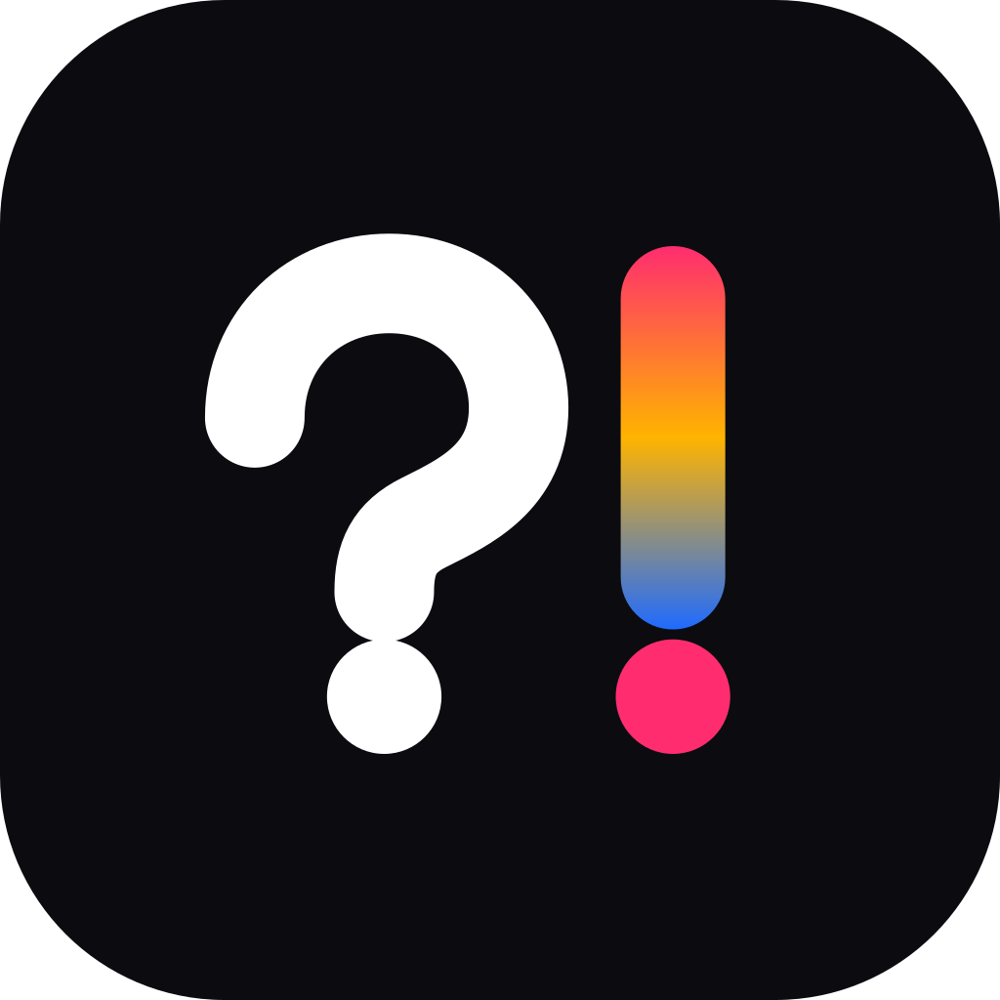
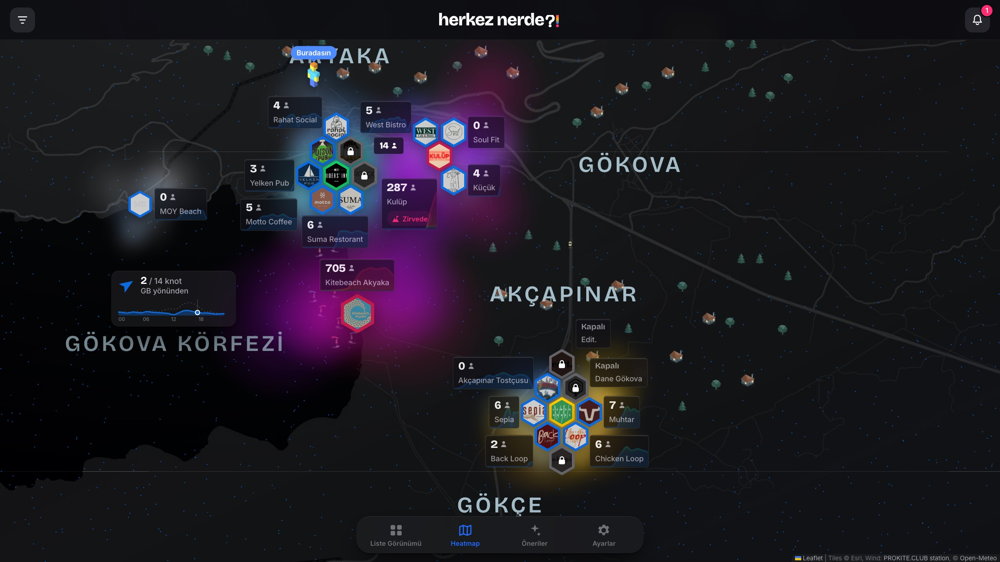
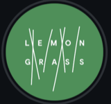
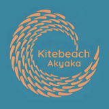
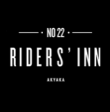
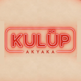
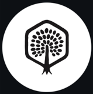

HERKEZ NERDE?!şimdi
Kulüp zirveye ulaştı
168 kişi
İşletmeler için anlık ziyaretçi sayımı ve detaylı bilgi paneli. Ziyaretçiler için sıcaklık haritası üzerinden ‘hangi mekana gitmeli’nin cevabı.
01Problem
Akyakaya ilk kez gelen müşteriler
Spontan, zayıf ve kişiselleşemeyen tercihler Akyaka'daki tecrübelerini şekillendiriyor. Sahip oldukları olumsuz fikirleri genelleştiriyorlar.
01Problem
Abi siz bi daneye bakın, kalabalıksa bize haber verin biz de gelelim.tarzı iletişim ve haber alma şekli zaman ve ulaşım maliyeti yaratıyor.
01Problem
Eğlence Mekanı (Kulüp, Pub, Canlı Müzik, Performans)
01Problem
Yiyecek, içecek, meyhane
Mekanların kaderi kite sahilinde vegan kite hocasından öğrenilen alternatiflerce belirleniyor.
01Problem
Spor, yoga, koşu, workshop
Dolayısıyla etkinlikler sezonda bile 'lokal etkinliği' olarak kalıyor. Dışarıdan gelen ziyaretçiler katılım sağlayabilecekleri etkinlikleri ve lokasyonlara ulaşım sağlayamıyor.

herkez nerde
HerkezNerde? Akyaka ve Akçapınardaki işletmeler ile tüketici arasındaki ilişkiyi güçlendirmek, işletmelerin bilinirliğini arttırırken tüketicinin Akyaka'da spor, eğlence ve aktivite trafiğini optimize ederek daha zengin bir tecrübe edinmesi amacıyla web mobil ve ios platformlarında yayınlanacak bir uygulamadır.
Tek platform. İki ürün.
Ana FeatureSadece işletme sahibinin erişebileceği bir panel üzerinden anlık metrikler.
Ziyaretçi ne zaman geliyor, ne zaman gidiyor. Hangi etkinlik daha yoğundu, kalabalık ne zaman sokaklara taştı, hangi etkinlik maliyetini karşılamadı. Hepsi tek panelde özelleştirilebilir veri görselleştirmesi.

Panel · Anlık metrikler
Kameradan gelen en güncel ziyaretçi sayısı. Yanındaki çubuklar son üç saati gösterir; son bir saatteki artış ya da azalış tek bakışta okunur.
Mekanın rekor kalabalığı. Bugünün en yüksek sayısı rekor ve günlük ortalamayla yan yana; rekora ne kadar yaklaşıldığı anlık görülür.
Ziyaretçi sayısının mekanın alanına bölünmesiyle bulunan tahmini yoğunluk. Her kare yaklaşık 1 m²; mekanın ne kadar dolu hissettirdiğini gösterir.
Panel
Kameranın her karesi grafikte bir nokta. Ölçülen çizgi kalabalığın gün içinde nasıl arttığını gösterir; kesikli çizgi gecenin geri kalanı için beklenen kalabalığı, noktalı çizgi son 8 haftanın aynı gününün ortalamasını verir. Alttaki kaydırıcıyla geçmiş günlere dönülür.
Panel
Son 8 haftanın ortalamasıyla hangi günlerin dolu, hangilerinin boş geçtiği. Personel, stok ve etkinlik planı bu dağılıma göre yapılabilir.

Kalabalığın günün hangi saatinde zirve yaptığı. Açılış saatleri, happy hour ve duyurular için doğru zamanı gösterir.

Panel
Benzer mekanlar arasında, seçilen saatte kalabalığın ne kadarının sizde olduğu. Rakiplere göre konumunuzu şu an için ya da geçmiş herhangi bir saat için karşılaştırın.
Benzer 11 mekân arasında (Gece kulübü, Pub, Meyhane, Bar): seçilen saatte her birindeki kişi sayısı. Demo verisi.
Panel
Her etkinlikte görülen en yüksek kalabalık, en yeniden eskiye. Hangi DJ, sanatçı ya da konseptin daha çok kişi çektiği ve hangi etkinliğin maliyetini karşılamadığı net görülür.
Panel
2021'den bu yana her haftanın zirvesi, sezonlarla birlikte. Sezonların birbirine göre performansı ve rekorun ne zaman kırıldığı uzun vadeli planlamaya ışık tutar.
Panel
Etkinlik takvimi işletmenin instagram sayfasından çekilir ve yayınlanır.
Panel
Menü, sosyal medya linkleri, iletişim, rezervasyon, web sayfası ve mekana ait görseller.
İşletme profil sayfasında istediği datayı tüketici ve diğer işletmelerle paylaşır.
01Sıcaklık Haritası
Ve bu veri, oyunlaştırılmış Akyaka ve Akçapınar haritası üzerindeki kalabalığı ‘sıcaklık haritası’ üzerinden göstermek için kullanılır.

01Sıcaklık Haritası
İşletmelerin verdiği bilgiler eşliğinde kuralları belirlenen YZ Asistanı, kullanıcının sorduğu sorular ışığında önerilerde bulunur.
Akyakaya yeni geldim bana günümü dolduracak şekilde önerilerde bulunur musun?
Akçapınarda olduğunu görüyorum. Sabah kahveni mutlaka lemongrassta içmelisin eğer yoga ile ilgileniyorsan çok iyi fırsat 1 saat sonra etkinlik başlıyor.

Sonrasında Kite sahiline bir uğramalısın 12:00 gibi oldukça kalabalık ve canlı olur. Akyakada olmanın en güzel tarafı Kitebeachdir.

Akşam yemeğini Mosso’da yiyebilir ve sonrasında eğer Pop müzik seviyorsan No22’de Deniz Sipahi’ye, DJ performansı seviyorsan Kulüp’e gitmelisin.


01Sıcaklık Haritası
Anlık bildirimlerle yaklaşan etkinlikleri, yükselen ve boşalan mekanlardan haberdar ol.
9 Kasım Pazartesi
16:00
HERKEZ NERDE?!şimdi
Kulüp zirveye ulaştı
168 kişi
HERKEZ NERDE?!şimdi
No22 Riders Inn kalabalığı dağılma eğiliminde.
Siz bir Dane’ye gidin, kalabalıksa bize haber verirsiniz.
Sabah Lemongrass diye bir yerde Yoga etkinliği varmış gidelim mi?
01:00’de müzik bitiyor Kulüp açık mı?
Kitebeach denen yerde 2500 kişi varmış bakalım mı aşkım?
İş için İstanbul’daydım, mekanım kalabalık mıydı?
Yeni DJ’in performansı bu sezon nasıldı?
Mekandaki mevcut kameralar işletme bilgisayarına bağlanır.
15 dakikada bir görüntü alınır, kişi sayımı yapılır ve görüntü yok edilir.
Sunucuya yalnızca sayım verisi gider.
287Sayım, tarih ve kategori etiketi ile saklanır.
28709.11 16:00Gece kulübüSayım verisi uygulamaya aktarılır.
Tüketici kalabalığı rakamlar eşliğinde görür.
İşletme aynı veriyi kendi panelinde görür.
Kameradan alınan görüntü, mekandan dışarı çıkmaz.
KVKK Aydınlatma Metni
Dane AkçapınarCRM entegrasyonu ile yeni dashboard componentleri
Temsili veriCumartesi tahmini: 310 kişi
Kulüp-UmutcanGencÇok iyi çalıyor aaabi!!
Kulüp-UmutcanGencGeliyoruz!
Lokasyon, mekan ve etkinlik bazında chat kanalları.
Lokasyonlara bırakılabilecek zaman ayarlı metin, görsel içerikler.
Onaylı profillerle başka insanlarla bağlantı kurabilme imkanı.
herkez nerde
09.11.26
Daha büyük görmek için telefonu yan çevirin